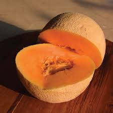
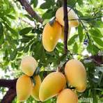

Watermelon Seeds (3 seeds)
Rs. 19.00

Cucumber Seeds (5 Seeds)
Rs. 15.00

Strawberry Seeds (25 Seeds)
Rs. 35.00

Muskmelon Seeds (3 seeds)
Rs. 15.00

Papaya Seeds (3 seeds)
Rs. 20.00

Papaya Plant Sapling (1pc)
Rs. 79.00

Strawberries Plant Sapling (1pc)
Rs. 49.00
